阅读：0
作者：解学武
KMP算法完全攻略（C语言实现）
快速模式匹配算法，简称 KMP 算法，是在 BF 算法基础上改进得到的算法。
学过 BF 算法的读者应该知道，该算法的实现思想很简单，就是 "傻瓜式" 地将模式串（假定为子串的串）与主串中的字符一一匹配。KMP 算法不一样，它可以略过一些原本就不可能成功的匹配过程，提高模式匹配的效率。
例如，对主串 A（"ABCABCE"）和模式串 B（"ABCE"）进行模式匹配，KMP 算法只需要匹配 2 次。
图 1b) 显示第一次匹配失败，从整个匹配过程可以获得的信息是：模式串中 "ABC" 和主串对应的字符相同，但模式串中的字符 'A' 与 'B' 和 'C' 不同。这也就意味着，下次模式匹配时没必要再让串 B 中的 'A' 与主串中的字符 'B' 和 'C' 一一匹配，它们绝不可能相等。
因此第二次模式匹配开始前，我们改变指针 j 的指向，如图 2a) 所示：
图 2a) 中，模式串直接跳过主串中的第 2、3 个字符，从第 4 个字符处开始第二次模式匹配，最终匹配成功。KMP 算法的整个匹配过程只进行了 2 次，而如果用 BF 算法需要匹配 4 次。
和 BF 算法相比，KMP 算法只需要移动指针 j 的位置，可以略过一些原本就不可能成功的匹配过程，减少匹配的次数，提高模式匹配的效率。
请大家先记住一句话：指针 j 的新位置只和模式串有关，与主串无关。接下来通过一个实例，给大家演示如何只通过模式串确定指针 j 的位置。
例如，将图 1a) 的模式串 B 改为 "ABCAE"，第一次匹配的过程如下图所示：
注意观察图 3a)，匹配失败时模式串中字符 'E' 前的 'A' 与模式串开头的 'A' 相等，因此我们可以将指针 j 指向模式串中的第 2 个字符，下次直接从 i 和 j 的位置开始匹配，这就是 KMP 算法重定位指针 j 的方法。
也就是说，模式匹配失败后指针 j 的新位置可以通过匹配失败位置前的字符计算得出（比如图 3a) 中的 "ABCA"）。进一步讲，只要给定一个模式串，我们就可以确定匹配失败后指针 j 的新位置。
当模式串和主串进行模式匹配时，模式串中的每个字符都可能导致匹配失败，而失败后指针 j 的新位置是可以计算出来的。模式串中有多少个字符，就可以计算出多少个指针 j 的新位置，它们是一一对应的关系。我们通常会各个字符对应的 j 的新位置存储到一个数组中，并给这个数组起名为 Next 数组，数组中的值统称为 next 值。
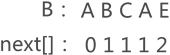
图 4 模式串对应的 next 数组
各个字符对应 next 值的计算过程是：
从图 4 中的数据可以看出，当字符 'E' 匹配失败时，指针 j 指向模式串数组中第 2 个字符，即 'B'，和图 3 不谋而合。
那么，如果编写程序计算出模式串对应的 NEXT 数组呢？
可以设计这样一个算法：刚开始时令 j 指向模式串中第 1 个字符（j=1），i 指向第 2 个字符（i=2）。接下来，对每个字符做同样的操作：
例如，计算模式串 "aaacd" 对应的 NEXT 数组，实现过程为：
1) 前两个字符对应的 next 值分别为 0 和 1（j=1, i=2）；
2) 由于 i 和 j 指向的字符相等，所以第三个字符 'a' 的 next 值为 j +1 = 2，同时 i 和 j 各自加 1（此时 j=2，i=3）。
3) 由于 i 和 j 指向的字符相等，所以第四个字符 'c' 的 next 值为 j +1 = 3，同时 i 和 j 各自加 1（此时 j=3，i=4）。
4）此时 i 和 j 指向的字符不相等，执行 j = next[j] 修改 j 的指向，如图 7 所示：
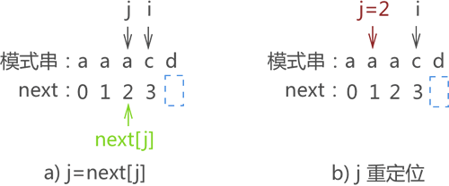
图 7 执行 j=next[j] 操作
从上图可以看到，i 和 j 指向的字符又不相同，继续执行 j = next[j]，如图 8 所示：
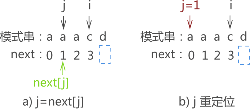
图 8 继续执行 j=next[j] 的操作
由于 j 和 i 指向的字符仍不相等，继续执行 j=next[j] 得到 j=0，字符 'd' 对应的 next 值为 1。
使用 KMP 算法只需匹配 3 次，而同样的问题使用 BF 算法则需匹配 6 次才能完成。
KMP 算法的完整 C 语言实现代码为：
学过 BF 算法的读者应该知道，该算法的实现思想很简单，就是 "傻瓜式" 地将模式串（假定为子串的串）与主串中的字符一一匹配。KMP 算法不一样，它可以略过一些原本就不可能成功的匹配过程，提高模式匹配的效率。
例如，对主串 A（"ABCABCE"）和模式串 B（"ABCE"）进行模式匹配，KMP 算法只需要匹配 2 次。
图 1b) 显示第一次匹配失败，从整个匹配过程可以获得的信息是：模式串中 "ABC" 和主串对应的字符相同，但模式串中的字符 'A' 与 'B' 和 'C' 不同。这也就意味着，下次模式匹配时没必要再让串 B 中的 'A' 与主串中的字符 'B' 和 'C' 一一匹配，它们绝不可能相等。
因此第二次模式匹配开始前，我们改变指针 j 的指向，如图 2a) 所示：
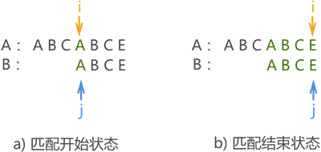
图 2 第二次人为模式匹配
图 2 第二次人为模式匹配
图 2a) 中，模式串直接跳过主串中的第 2、3 个字符，从第 4 个字符处开始第二次模式匹配，最终匹配成功。KMP 算法的整个匹配过程只进行了 2 次，而如果用 BF 算法需要匹配 4 次。
和 BF 算法相比，KMP 算法只需要移动指针 j 的位置，可以略过一些原本就不可能成功的匹配过程，减少匹配的次数，提高模式匹配的效率。
模式串指针的重定位
对于初学者而言，KMP 算法最大的难点是：当模式匹配失败后，如何修改指针 j 的位置。请大家先记住一句话：指针 j 的新位置只和模式串有关，与主串无关。接下来通过一个实例，给大家演示如何只通过模式串确定指针 j 的位置。
例如，将图 1a) 的模式串 B 改为 "ABCAE"，第一次匹配的过程如下图所示：
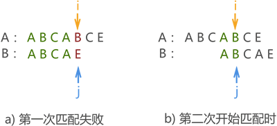
图 3 模式匹配过程示意图
图 3 模式匹配过程示意图
注意观察图 3a)，匹配失败时模式串中字符 'E' 前的 'A' 与模式串开头的 'A' 相等，因此我们可以将指针 j 指向模式串中的第 2 个字符，下次直接从 i 和 j 的位置开始匹配，这就是 KMP 算法重定位指针 j 的方法。
也就是说，模式匹配失败后指针 j 的新位置可以通过匹配失败位置前的字符计算得出（比如图 3a) 中的 "ABCA"）。进一步讲，只要给定一个模式串，我们就可以确定匹配失败后指针 j 的新位置。
当模式串和主串进行模式匹配时，模式串中的每个字符都可能导致匹配失败，而失败后指针 j 的新位置是可以计算出来的。模式串中有多少个字符，就可以计算出多少个指针 j 的新位置，它们是一一对应的关系。我们通常会各个字符对应的 j 的新位置存储到一个数组中，并给这个数组起名为 Next 数组，数组中的值统称为 next 值。
Next数组
模式串中各个字符对应的 next 值的计算方式是，取该字符前面的字符串（不包含自己），其前缀字符串和后缀字符串相同字符的个数再 +1 就是该字符对应的 next 值。前缀字符串指的是位于模式串起始位置的字符串，例如模式串 "ABCD"，则 "A"、"AB"、"ABC" 都属于前缀字符串；后缀字符串指的是位于串结尾处的字符串，还拿模式串 "ABCD" 来说，"D"、"CD"、"BCD" 为后缀字符串。
注意，模式串中第一个字符对应的值为 0，第二个字符对应的值是 1 ，这是固定不变的。因此，图 3 的模式串 "ABCAE" 中各个字符对应的 next 值如图 4 所示：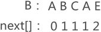
图 4 模式串对应的 next 数组
各个字符对应 next 值的计算过程是：
- 第三个字符 'C'：在前面的字符串 "AB" 中，前缀字符串和后缀字符串相等个数为 0，0 + 1 = 1，所以字符 'C' 对应的 next 值为 1。
- 第四个字符 'A'：在前面的字符串 "ABC" 中，前缀字符串和后缀字符串相等个数为 0，0 + 1 = 1，所以字符 'A' 对应的 next 值为 1。
- 第五个字符 'E'：在前面的字符串 "ABCA" 中，前缀字符串和后缀字符串相等个数为 1，1 + 1 = 2，所以字符 'E' 对应的 next 值为 2。
从图 4 中的数据可以看出，当字符 'E' 匹配失败时，指针 j 指向模式串数组中第 2 个字符，即 'B'，和图 3 不谋而合。
那么，如果编写程序计算出模式串对应的 NEXT 数组呢？
可以设计这样一个算法：刚开始时令 j 指向模式串中第 1 个字符（j=1），i 指向第 2 个字符（i=2）。接下来，对每个字符做同样的操作：
- 如果 i 和 j 指向的字符相等，则 i 后面第一个字符的 next 值为 j+1，同时 i 和 j 做自加 1 操作，为求下一个字符的 next 值做准备；
- 如果 i 和 j 指向的字符不相等，则执行 j=next[j] 修改 j 的指向，然后以同样的方法对比 i 和 j 指向的字符，以此类推。当 j 的值为 0 时，将 i 后面第一个字符的 next 值置为 1。
例如，计算模式串 "aaacd" 对应的 NEXT 数组，实现过程为：
1) 前两个字符对应的 next 值分别为 0 和 1（j=1, i=2）；
2) 由于 i 和 j 指向的字符相等，所以第三个字符 'a' 的 next 值为 j +1 = 2，同时 i 和 j 各自加 1（此时 j=2，i=3）。
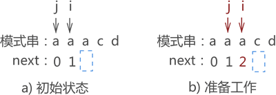
图 5 i 和 j 指向字符相等
图 5 i 和 j 指向字符相等
3) 由于 i 和 j 指向的字符相等，所以第四个字符 'c' 的 next 值为 j +1 = 3，同时 i 和 j 各自加 1（此时 j=3，i=4）。
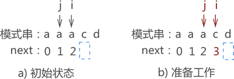
图 6 i 和 j 指向字符仍相等
图 6 i 和 j 指向字符仍相等
4）此时 i 和 j 指向的字符不相等，执行 j = next[j] 修改 j 的指向，如图 7 所示：
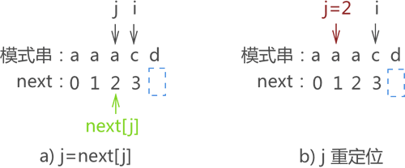
图 7 执行 j=next[j] 操作
从上图可以看到，i 和 j 指向的字符又不相同，继续执行 j = next[j]，如图 8 所示：
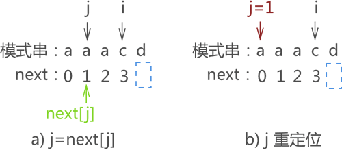
图 8 继续执行 j=next[j] 的操作
由于 j 和 i 指向的字符仍不相等，继续执行 j=next[j] 得到 j=0，字符 'd' 对应的 next 值为 1。
这里给出上述思想实现 NEXT 数组的 C 语言代码：实际上，当第一次比较 i 和 j 不相等时，意味着匹配失败位置前的最长前缀和后缀字符串不相同；执行 j=next[j] 后，i 和 j 仍不相等，意味着匹配失败位置前的次长前缀和后缀字符串也不相同，以此类推。当 j = 0 时，意味着匹配失败位置前没有相等的前缀和后缀字符串。
void Next(char* T, int* next) {
int i = 1;
int j = 0;
next[1] = 0;
//next[2]=1 可以通过第一次循环直接得出
while (i < strlen(T)) {
if (j == 0 || T[i - 1] == T[j - 1]) {
i++;
j++;
next[i] = j;
}
else {
j = next[j];
}
}
}
学会计算模式串中每个字符对应的 next 值之后，KMP 算法的实现过程就容易理解了。KMP 算法的实现
假设主串 A 为 "ababcabcacbab"，模式串 B 为 "abcac"，KMP 算法进行模式匹配的过程为：-
第一次匹配如图 9 所示，匹配结果失败，指针 j 移动至 next[j] 的位置；
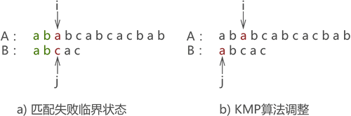
图 9 第一次匹配示意图
-
第二次匹配如图 10 所示，匹配结果失败，执行 j=next[j] 操作：

图 10 第二次匹配示意图
-
第三次匹配成功，如图 11 所示：
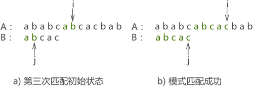
图 11 第三次匹配示意图
使用 KMP 算法只需匹配 3 次，而同样的问题使用 BF 算法则需匹配 6 次才能完成。
KMP 算法的完整 C 语言实现代码为：
#include <stdio.h>
#include <string.h>
void Next(char* T, int* next) {
int j = 0;
int i = 1;
next[1] = 0;
while (i < strlen(T)) {
if (j == 0 || T[i - 1] == T[j - 1]) {
i++;
j++;
next[i] = j;
}
else {
j = next[j];
}
}
}
int KMP(char* S, char* T) {
int next[10];
int i = 1;
int j = 1;
Next(T, next);//根据模式串T,初始化next数组
while (i <= strlen(S) && j <= strlen(T)) {
//j==0:代表模式串的第一个字符就和当前测试的字符不相等；S[i-1]==T[j-1],如果对应位置字符相等，两种情况下，指向当前测试的两个指针下标i和j都向后移
if (j == 0 || S[i - 1] == T[j - 1]) {
i++;
j++;
}
else {
j = next[j];//如果测试的两个字符不相等，i不动，j变为当前测试字符串的next值
}
}
if (j > strlen(T)) {//如果条件为真，说明匹配成功
return i - (int)strlen(T);
}
return -1;
}
int main() {
int i = KMP("ababcabcacbab", "abcac");
printf("%d", i);
return 0;
}
运行结果为：
6